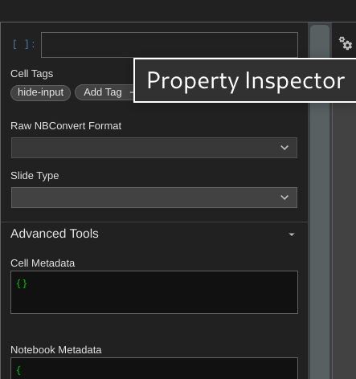
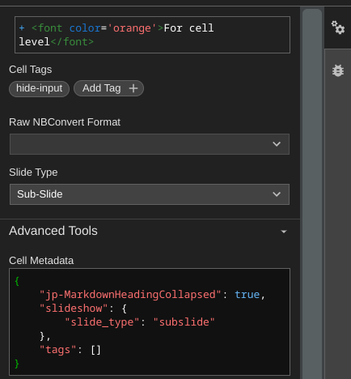
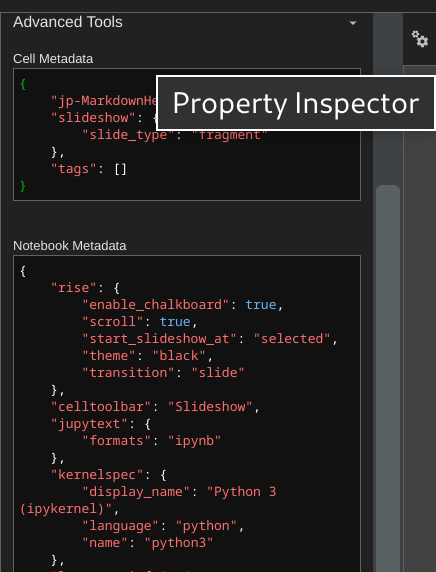
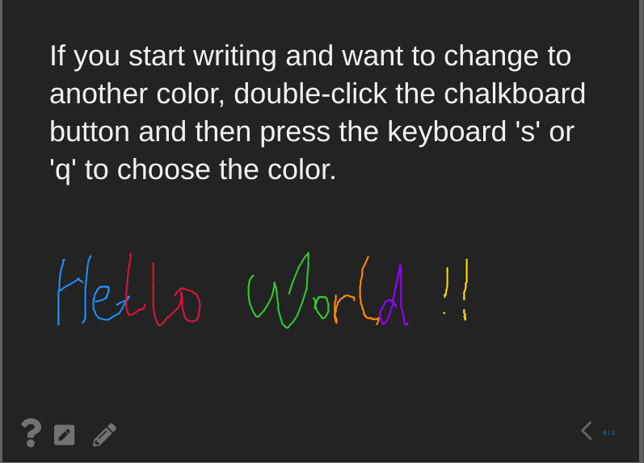

Quick start
Contents
1. Quick start#
1.1. Turn your notebooks into slideshows#
Alt + r
1.1.1. Press Space to keep on#
You can write a regular Jupyter notebook, with the usual mix of markdown and code cells
If you press
Shift + Space
you will go backwards.
In code cells, you press
Shift + Enter
as usual to evaluate your code.
# this is where you press Shift-Enter
import numpy as np
import matplotlib.pyplot as plt
plt.ion()
"Hello world"
'Hello world'
# of course you can show figures
def polynom(x):
return 2 * x**2 - 20 * x + 2
X = np.linspace(-10, 10)
Y = polynom(X)
plt.plot(X, Y);

1.1.2. Zoom in | Zoom out#
|
zoom in |
zoom out |
|
Alt + |
Alt - |
|
Ctrl + |
Ctrl - |
You’re in a browser, so you can always use smaller / larger fonts deponding on your platform.
1.1.3. Toggle overview#
Press w to see the overview of all slides
Navigate with Left arrow and Right arrow
1.2. Edit cells#
Ainsert a new cell above active cellBinsert a new cell belowMset to a Markdown cellYset to a Code cell
Xcut selected cellCcopy selected cellVpaste cell copied/cutD+D(D twice) delete active cell.Zundo cell deletion
1.2.1. Run code from a different kernel#
Use IPython Magics with the name of your kernel at the start of each cell
%%bash
%%HTML
%%python3
1.3. Add slide tag to each cell#
shift-i: toggle slideshift-b: toggle subslideshift-g: toggle fragment
1.3.1. RISE notebook extension#
See full documentation at http://rise.readthedocs.io/.
2. Speaker notes#
2.1. Press t, presenter view window will pop out.#
The presenter view shows Notes cells, which won’t appear in the main slides.
This is an example of a ‘Notes’ cell. Put an Enter at the front of the Notes cell to avoid the repetitive display of the first paragraph.Put an Enter at the front of the Notes cell to avoid the repetitive display of the first paragraph.
Use two ‘Enter’ to make one blank line to form a separate paragraph. Use two ‘Enter’ to make one blank line to form a separate paragraph.
Put all notes in one cell per slide
Put an
Enterat the front of the Notes cellUse two
Enterto seperate paragraphs
Put all notes in one cell per slide. Don’t make consecutive Notes cells, showing only the first note cell among them.
We can also write Code blocks in the notes
1. Use `
2. Use Tap
3. Two Enter + Tap to make a Code block.
This is an example of a Skip cell.
3. Metadata Setting#
Edit tags under the “Property Inspector” menu with the gears icon at the top-right corner.
Tags UI in JupyterLab looks like:

3.1. Two levels of metadata#
For cell level
Edit Cell Metadata, and click the checkmark right below the metadata tag to save the changes.

For notebook level
Edit Notebook Metadata, and click the checkmark below the metadata tag to save the changes.

4. Custom RISE#
Source: RISE documentation
Here is the rise configuration for this demo file.
"rise": {
"enable_chalkboard": true,
"footer": "Hello World",
"header": "Quick Start",
"rise": {
"height": "90%",
"width": "90%"
},
"scroll": true,
"start_slideshow_at": "selected",
"transition": "none"
}
Plus, all parameters we can use.
"rise": {
"autolaunch": false,
"enable_chalkboard": false,
"start_slideshow_at": "beginning",
"auto_select": "code",
"show_buttons_on_startup": false,
"header": "",
"footer": "",
"backimage": false,
"overlay": "",
"theme": "simple",
"transition": "cube",
"slideNumber": "h/v",
"width": "100%",
"height": "100%",
"controls": true,
"progress": true,
"history": true,
"scroll": true,
"center": true,
"auto_select_timeout": 450,
"restore_timeout": 500,
"async_timeout": 250
}
5. CSS#
2 files are loaded without the need for configuring
rise.cssin the current directoryquickstart.cssfor this notebook because it is calledquickstart.ipynb
5.1. Custom CSS#
You can copy the rise.css file in this folder to your target notebook file to set up the slideshow effect.
Alternatively, you can add custom CSS named the same with .ipynb file in the same directory.
6. Chalkboard#
You can turn on the chalkboard in the notebook metadata with:
...
"rise": {
"enable_chalkboard": true
}
...
Chalkboard displays itself with two extra buttons in the lower left area

6.1. Keyboard commands#
It also reacts to the following additional keyboard commands:
[to turn the whole space into an empty chalkboard]to start adding free drawings to the current slide\to download chalkboard drawing=to reset chalkboard drawing on the current slide-to clear the chalkboard
6.2. Eraser#
Long press the right mouse button can turn on the eraser
6.3. Change chalk color#
After clicking the chalkboard button, press the keyboard s to switch to the next color and q to switch to the previous color.
The default chalk color is grey. And other color choices are blue, red, green, orange, purple, and yellow.
If you started writing and want to change to another color, double-click the chalkboard button and then press the keyboard s or q to choose the color.
